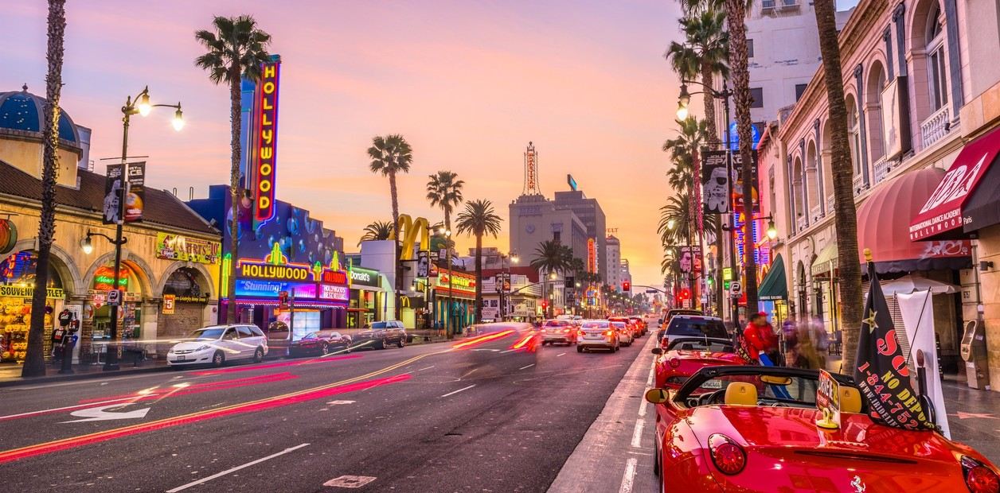
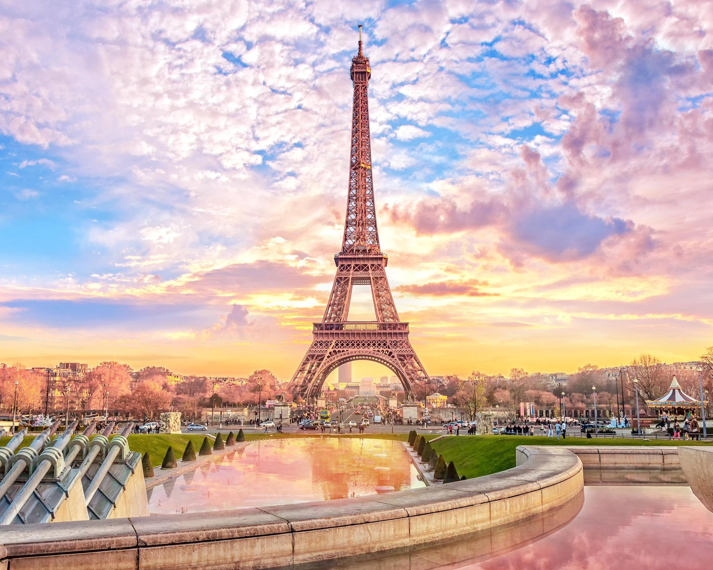

Los Angeles
Los Ángeles es una ciudad que te muestra muchas caras y vecindarios característicos, y cada uno ofrece algo emocionante. La ciudad tiene tanto para ofrecer que necesitarás mucho tiempo para explorarla. Si buscas glamour, fiestas y emoción, Los Ángeles es el lugar ideal para ti.
Francia
La popularidad de Francia como destino MICE (Encuentros, Incentivos, Conferencias y Exposiciones) es el resultado de una feliz combinación de factores. La facilidad de acceso, sus infraestructuras del más alto nivel, hermosos paisajes y unos recintos únicos para acoger eventos son factores que refuerzan la posición de Francia como líder en este sector. El inconfundible arte de vivir francés, su patrimonio cultural de gran riqueza y su exquisita gastronomía son un plus para disfrutar de un evento de negocios de calidad.
Nueva York
Con su horizonte mundialmente reconocido y más de 8,4 millones de personas que la llaman hogar, la ciudad de Nueva York desborda diversidad y emoción, desde las icónicas atracciones que has visto en la televisión y en las películas hasta joyas ocultas que esperan ser descubiertas. Cada uno de los cinco barrios (Bronx, Brooklyn, Manhattan, Queens y Staten Island) tiene una característica propia, mientras que cada vecindario conserva su propia identidad. Las calles fáciles de recorrer a pie y el acceso al metro, a los autobuses y a los taxis hacen que ir de vecindario en vecindario sea pan comido. No importa si es tu primera o tu enésima vez aquí, siempre hay algo nuevo que hacer